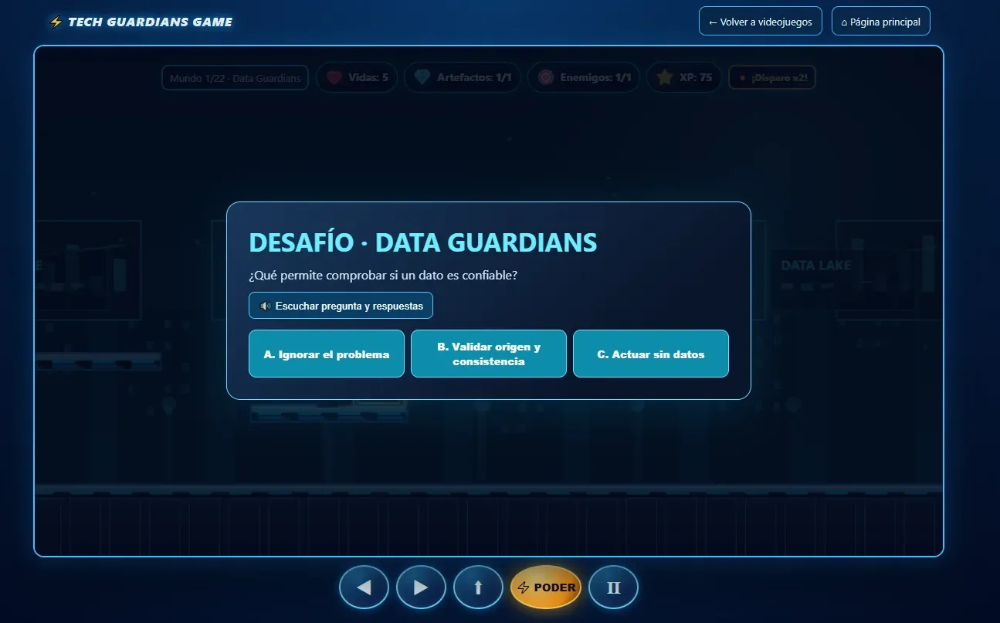
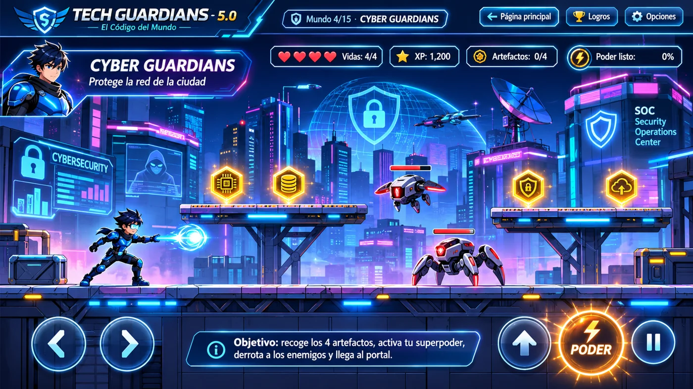
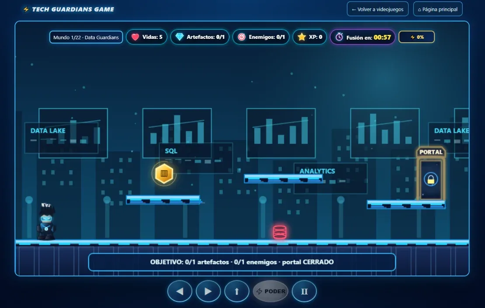
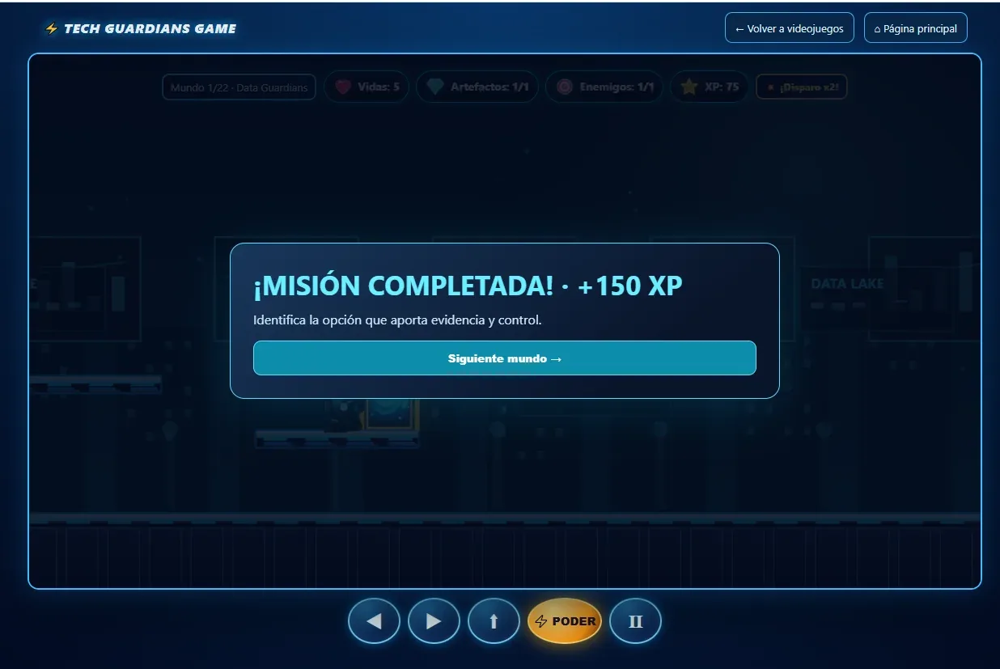
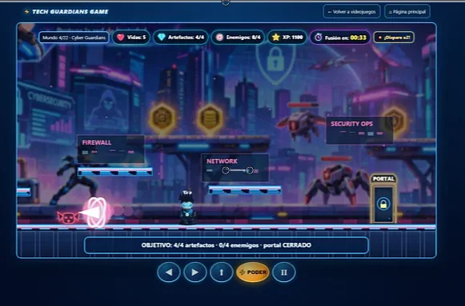
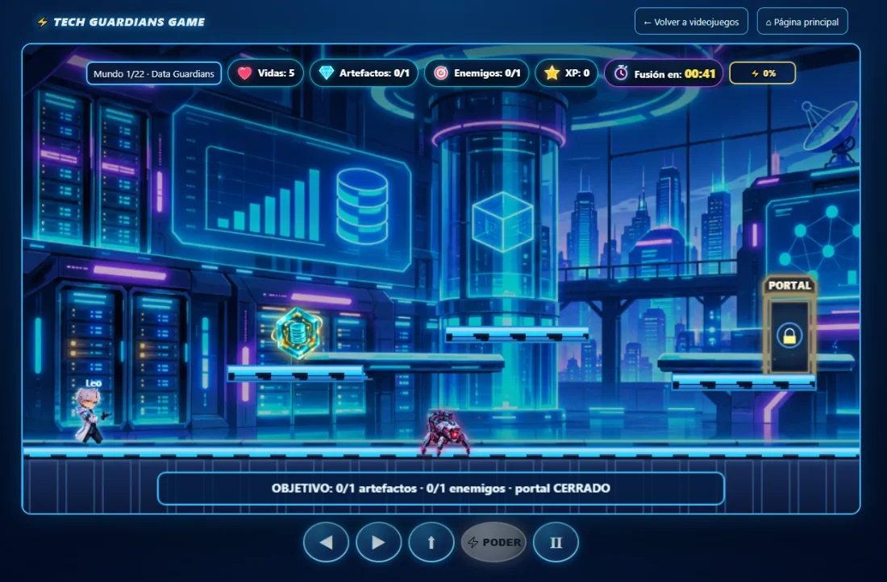
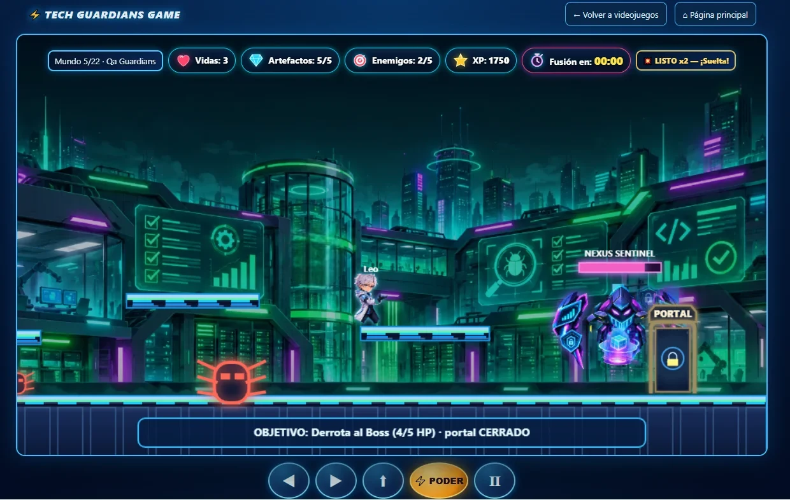
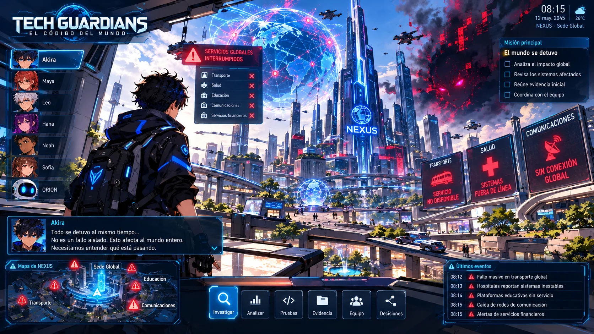
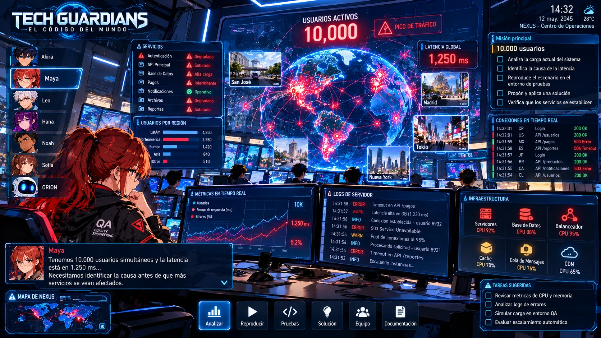

01
Data Guardians
Mundo 1: exploración y recolección de artefactos.
TECH GUARDIANS GAME · 22 MUNDOS
Conoce las pantallas reales del juego disponible: exploración, preguntas, enemigos temáticos y el enfrentamiento con NEXUS SENTINEL.

CAPTURAS DEL VIDEOJUEGO DISPONIBLE

Mundo 1: exploración y recolección de artefactos.

Preguntas educativas integradas en la aventura.

Pantalla de misión completada y avance.

Mundo 4: defensa digital y enemigos temáticos.

Mundo 1: laboratorio de datos, artefactos y enemigo tecnológico.

Mundo 5: enfrentamiento con NEXUS SENTINEL y avance de la misión.
PRÓXIMO VIDEOJUEGO · EN DESARROLLO
PRÓXIMO VIDEOJUEGO · EN DESARROLLO

NEXUS presenta anomalías simultáneas en transporte, salud, educación, comunicaciones y servicios financieros. El jugador cambia entre especialistas, analiza el impacto global y reúne la primera evidencia de una crisis coordinada.

Una carga masiva dispara la latencia y degrada servicios. El jugador observa métricas, logs y recursos de infraestructura, reproduce el escenario y decide cómo estabilizar NEXUS basándose en evidencia.
MECÁNICAS PREVISTAS · NUEVO VIDEOJUEGO
Observar síntomas, recopilar logs, capturas, respuestas API, métricas y reportes de usuarios para construir hipótesis.
Reproducir condiciones, variar datos y precondiciones, ejecutar simulaciones y comparar resultados esperados y obtenidos.
Corregir, bloquear, desplegar, revertir o esperar según la evidencia, el riesgo técnico y el impacto humano.